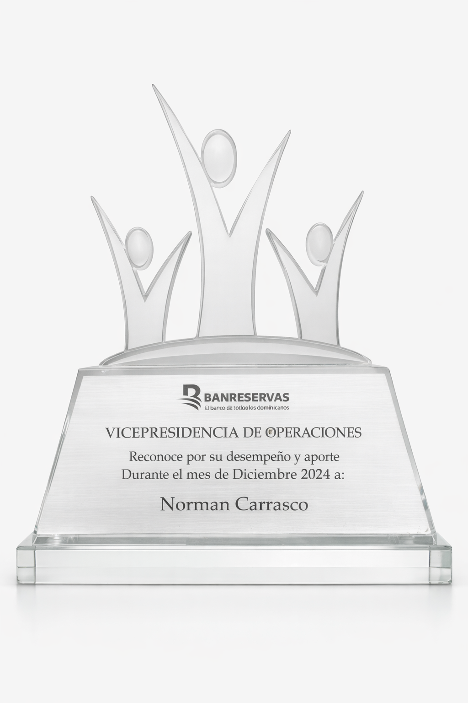
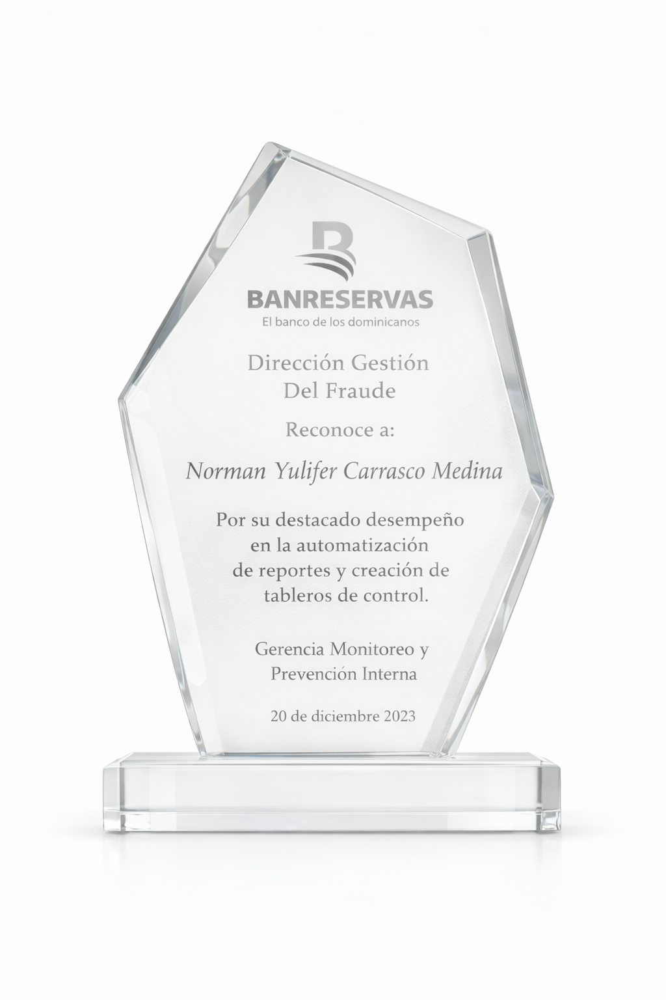
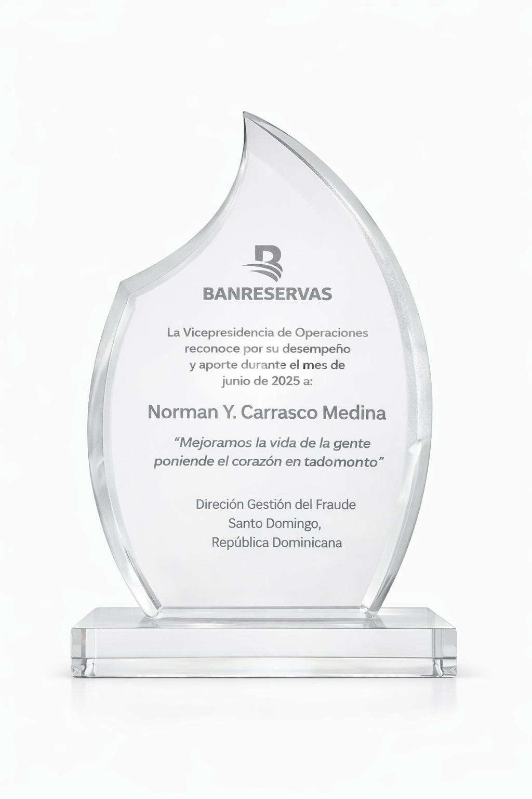

Analista del Año 2020
Reconocimiento por excelente desempeño, dedicación y compromiso durante el año en la GSIG. Destaca la calidad del trabajo analítico y la mejora continua en procesos críticos.
Data Scientist & BI Consultant
Combino ciencia de datos, prevención de fraude y business intelligence para diseñar soluciones que reducen pérdidas y mejoran la toma de decisiones en banca y negocios digitales.
Santo Domingo, República Dominicana
Ingeniero en Informática y maestrante en Ciencia de Datos e Inteligencia Artificial (UASD). Combino machine learning, business intelligence y prevención de fraude para transformar datos complejos en decisiones estratégicas con impacto real en el negocio bancario.
He recibido reconocimientos de distintas áreas: la Dirección Senior de Desarrollo y QA me distinguió como Analista del Año 2020; la Dirección Gestión del Fraude reconoció mi desempeño en automatización de reportes y tableros de control (2023); y la Vicepresidencia de Operaciones me otorgó reconocimientos por desempeño y aporte en diciembre 2024 y junio 2025.
Reconocido como Analista del Año 2020 por desempeño, dedicación y compromiso en proyectos críticos de GSIG en Banreservas.
Premiado por la automatización de reportes y creación de tableros de control que mejoraron la eficiencia operativa y la toma de decisiones en Monitoreo y Prevención Interna.
Testimonios de colegas y colaboradores destacan la colaboración, apoyo al equipo y enfoque en resultados compartidos en entornos de alta exigencia.
Lideré la migración ETL a IBM DataStage y la salida a producción del core bancario Signature garantizando continuidad operativa sin interrupciones.
Traduzco análisis técnicos en reportes ejecutivos para dirección y gerencia, facilitando decisiones estratégicas basadas en datos en entornos bancarios.
Dirijo un equipo de 5 especialistas compartiendo conocimiento, fomentando el crecimiento profesional y alineando capacidades técnicas con objetivos del área.
Reconocimiento por excelente desempeño, dedicación y compromiso durante el año en la GSIG. Destaca la calidad del trabajo analítico y la mejora continua en procesos críticos.

Reconocimiento por destacado desempeño en la automatización de reportes y creación de tableros de control. Otorgado por la Gerencia Monitoreo y Prevención Interna.

Reconocimiento por desempeño y aporte durante el mes de diciembre 2024, otorgado por la Vicepresidencia de Operaciones — Dirección Gestión del Fraude.

Reconocimiento por desempeño y aporte durante el mes de junio 2025, otorgado por la Vicepresidencia de Operaciones — Dirección Gestión del Fraude.